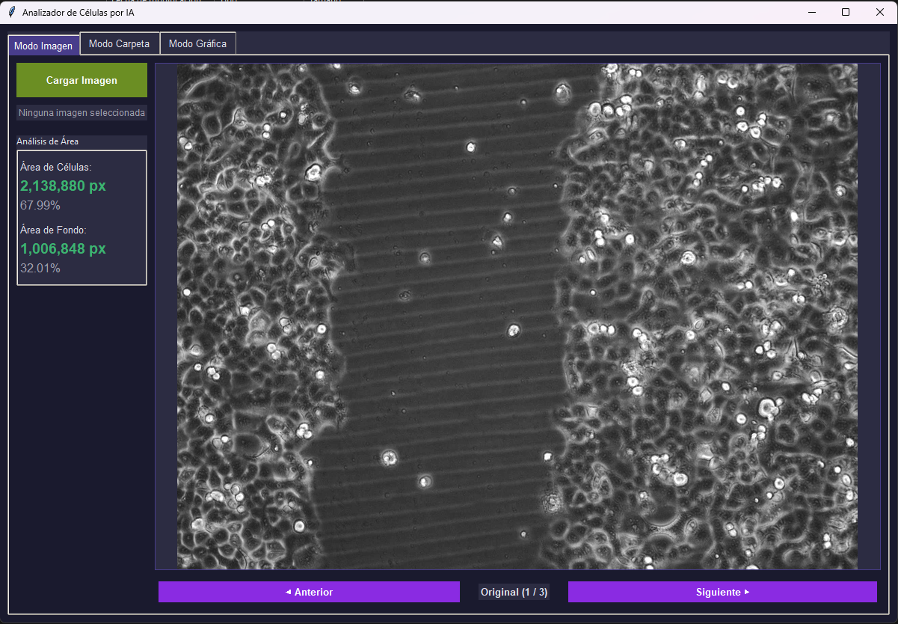
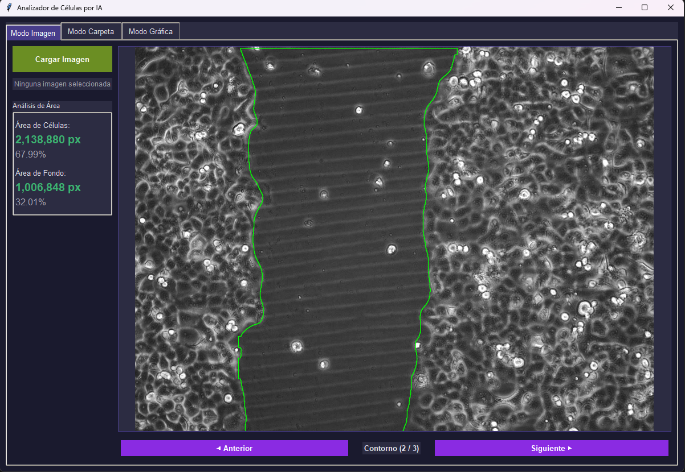
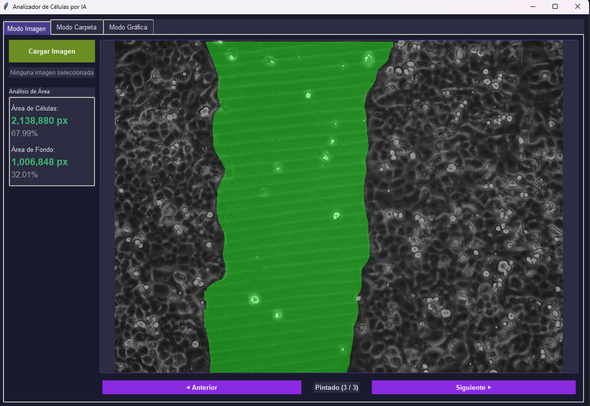
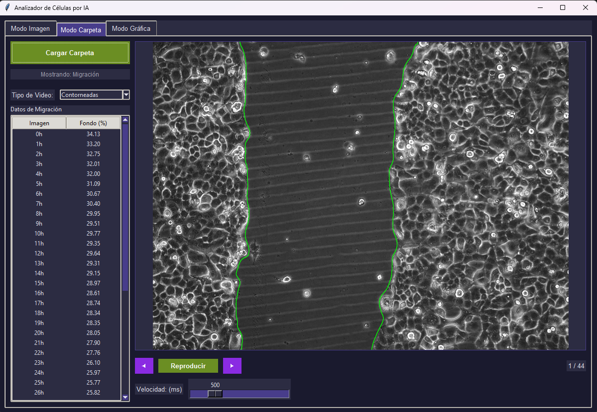
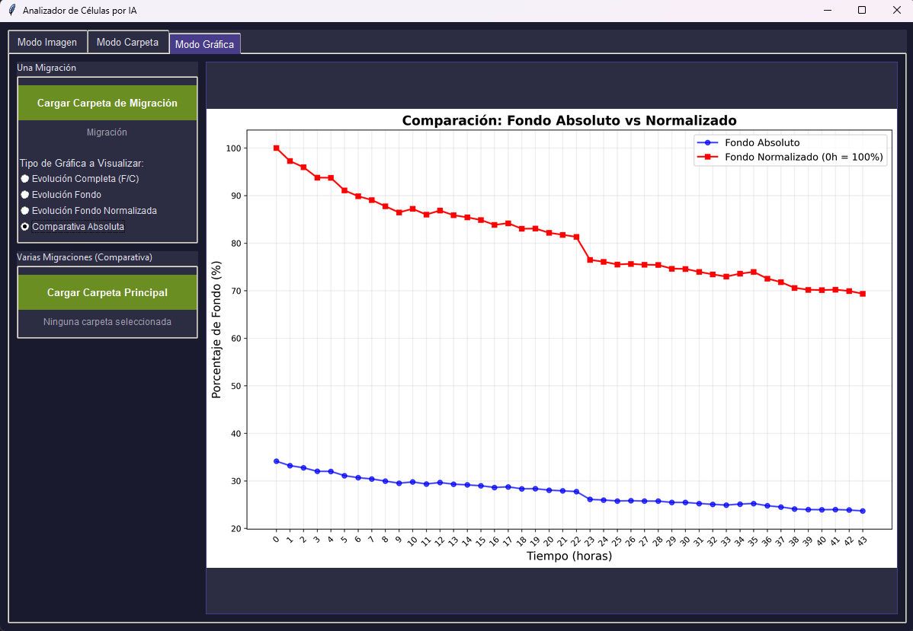

MigraCell Analyzer
Plataforma de Microscopía Inteligente para el Análisis Automatizado de Migración Celular mediante Deep Learning
⚠️ Desafío Actual
En investigación biomédica, los ensayos de wound healing son críticos para estudiar cáncer y regeneración celular. Analizarlos manualmente implica:
- 4-8 horas por experimento
- Subjetividad del investigador
- Errores por fatiga visual
- Baja reproducibilidad
✅ Solución MigraCell
Automatización total mediante Deep Learning:
- < 5 minutos por experimento
- Segmentación pixel-perfect
- Resultados 100% reproducibles
- Procesamiento batch desatendido
El núcleo del sistema es un modelo YOLOv8-seg personalizado, entrenado con imágenes de microscopía segmentadas manualmente. La arquitectura permite detectar instancias de células y fondo con alta precisión.
| Componente | Tecnología | Función |
|---|---|---|
| Modelo IA | YOLOv8-seg + PyTorch | Segmentación de instancias (Células vs Fondo) |
| Visión | OpenCV 4.8 | Preprocesamiento, contornos y morfología |
| Datos | Pandas + NumPy | Análisis numérico y exportación Excel |
| GUI | Tkinter (Custom Theme) | Interfaz de usuario profesional y reactiva |
1. Análisis Individual (Validación)
Permite al investigador verificar la calidad de la segmentación imagen por imagen.



2. Procesamiento Batch (Producción)
El núcleo de la automatización. Procesa carpetas enteras (experimentos completos de 24-48h) sin intervención.

🎥 Resultado: Timelapse de Migración
3. Análisis de Resultados
Generación automática de gráficas listas para publicación científica.
